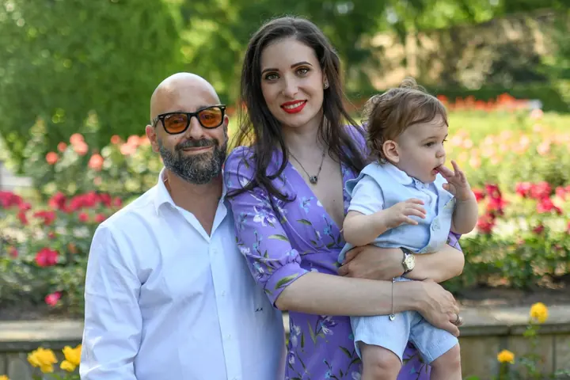
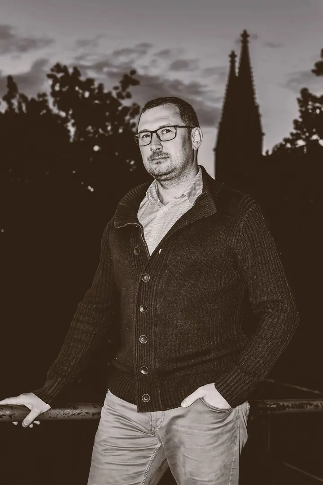
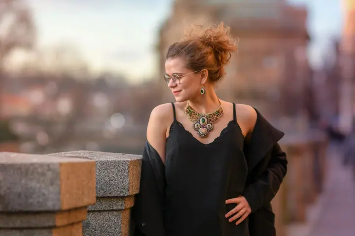

01 / 04
Portréty a business fotky
Samostatné focení trvá 40–70 minut na dvou místech a dostanete z něj přes 30 upravených fotek. Na profilovou fotku do životopisu, na web nebo do dokladů stačí krátké focení na 10–20 minut.
Zeptat se na termín→





Portréty a příběhy, do kterých vkládám duši
Zeptat se na termín →(01) Ahoj
Jmenuji se Alex Gurau a jsem fotograf v Praze. Fotím portréty , páry i rodiny a jejich velké dny, třeba křtiny . Na focení se vždycky předem domluvíme a každou fotku pak upravuji ručně, dokud nesedí.
(02) Co fotím
01 / 04
Samostatné focení trvá 40–70 minut na dvou místech a dostanete z něj přes 30 upravených fotek. Na profilovou fotku do životopisu, na web nebo do dokladů stačí krátké focení na 10–20 minut.
Zeptat se na termín→02 / 04
Fotíme 90–120 minut na třech místech a dostanete přes 60 pečlivě upravených fotek. Než začneme, zdarma vám poradím s oblečením, pózováním i výběrem místa.
Zeptat se na termín→03 / 04
Fotíme 45–90 minut na dvou místech a dostanete přes 40 upravených fotek. Hodí se pro zamilované páry, k výročí i k nejdůležitějšímu dni vašeho života.
Zeptat se na termín→Dále nabízím
Křtiny, baby shower nebo soukromou oslavu fotím 3–5 hodin, podle potřeby i na více místech. Dostanete přes 100 upravených fotek.
↗(03) Portfolio
Kliknutím fotku zvětšíte · fotografie jsou ilustrační
(04) Postup
Od první zprávy po hotovou galerii.
Krok 1 z 4
Vyberte si termín přes rezervaci nebo mi napište či zavolejte. Termíny se brzy zaplní, protože focení za rok dělám jen omezený počet.
Krok 2 z 4
Nejradši se potkám osobně, abych poznal váš příběh. Poradím vám s líčením, oblečením, pózováním i výběrem místa.
Krok 3 z 4
Během focení vás povedu a ukážu vám, jak se postavit, ale vlastní nápady na pózy vítám. Místo často měníme, aby byly fotky pestřejší.
Krok 4 z 4
Každou fotku upravuji ručně, od světla a barev po drobné retuše. Dostanete pečlivě vybrané a upravené snímky.
Na každé fotce pracuji, dokud nesedí
(05) Za objektivem
Kreslím od tří let a v jedenácti mě rodiče poslali na uměleckou školu. Zkoušel jsem modelování z hlíny, portréty, design i malbu na sklo, dřevo a plátno. První fotoaparát na film mi koupila babička, když mi bylo asi třináct, a od té doby mě fotografie nepustila.
Vystudoval jsem geologii a prošel různými obory, ale lásku k fotografii jsem si nesl pořád s sebou. V roce 2015 jsem dokončil profesionální kurz, který vedl Dan Mălureanu, a hned jsem začal fotit v různých evropských zemích. Od roku 2017 žiju v Praze.
Ročně dělám jen omezený počet focení, aby každé dostalo stejnou péči. Rád se s vámi předem potkám osobně, protože vztah mezi vámi a fotografem je pro mě důležitý. Úprava jedné fotky mi zabere od patnácti minut po několik hodin a beru to jako součást tvorby.
Alex
Alex Gurau · Portrétní, párový a rodinný fotograf
Krátké focení na profilovou fotku stojí 1 000 Kč, samostatný portrét 1 500 Kč, párové focení 2 000 Kč, rodinné 3 000 Kč a focení oslavy nebo křtin 5 000 Kč.
Ano, fotím kdekoli ve světě. Mimo Prahu jen hradíte cestu, ubytování a jídlo.
Ano, jen mi to prosím dejte vědět předem. Pokud je nové místo mimo domluvenou oblast, hradíte cestu, ubytování a jídlo.
Nebude. Během focení vás povedu a pomůžu vám se uvolnit. A pokud máte vlastní pózy, které vám sedí, rád je použijeme.